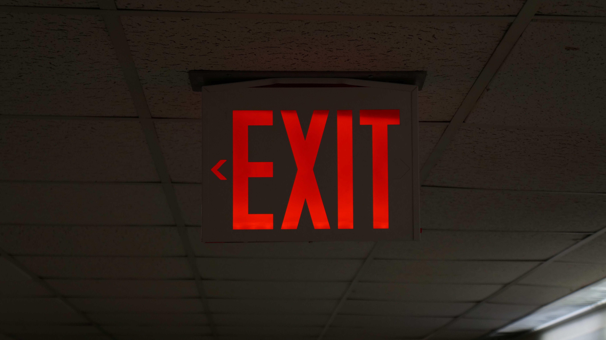
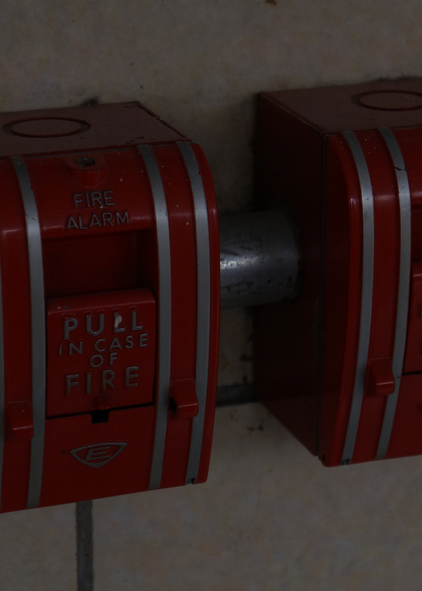

Week 2
1920 px by 1080 px
I chose this exit sign image because the bright red sign stands out in the dark space. I used a centered composition and the ceiling lines to help lead the viewer's eyes to the sign.

5”x7”
I chose this fire alarm image because the red alarms contrast with the plain white wall. I used cropping and repetition to make the photo more interesting and balanced.
